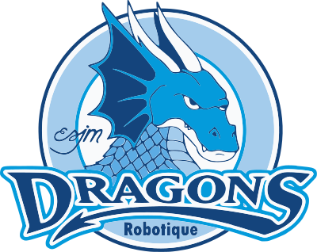
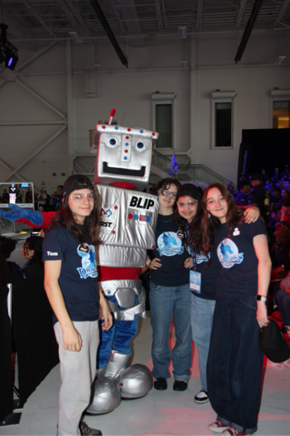
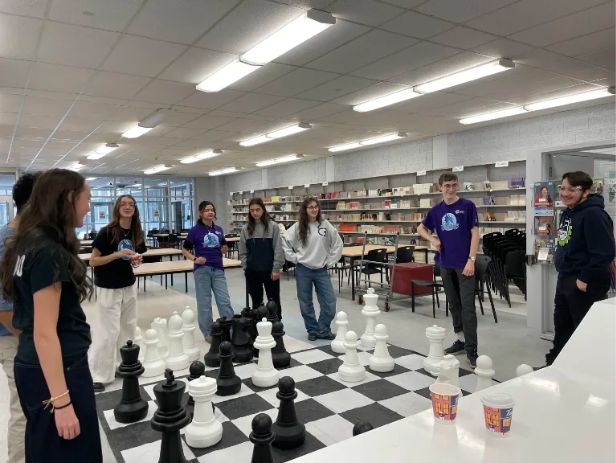
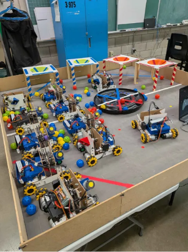
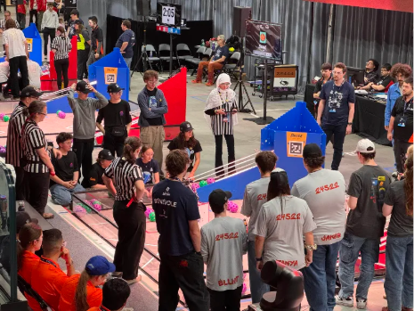
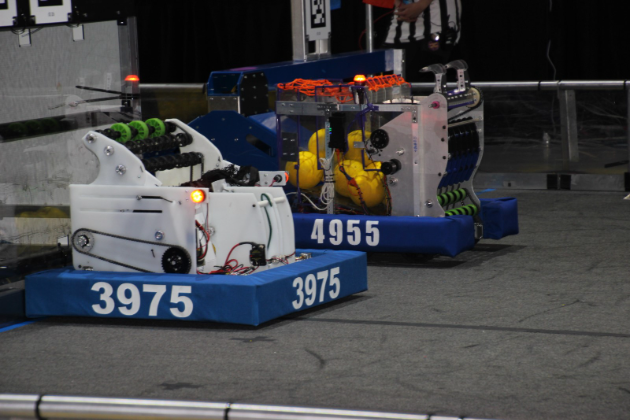
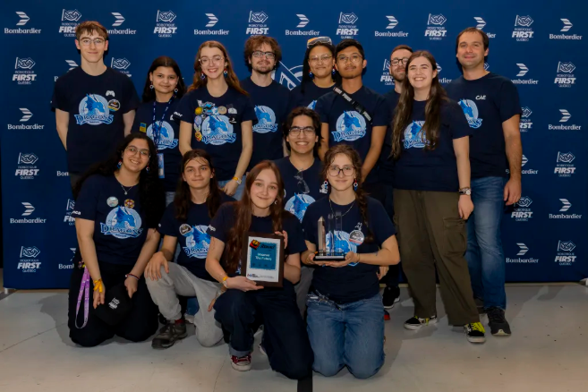
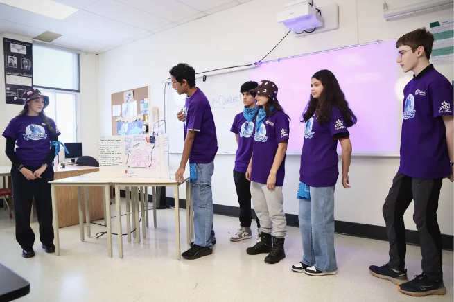
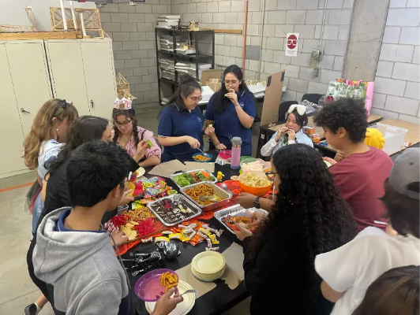
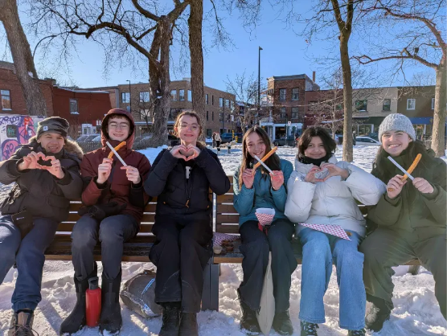

Bourse Best Buy
Notre vidéo réalisée dans le cadre de la candidature à la bourse Best Buy.


Une année pour apprendre, construire, participer à des compétitions et grandir ensemble autour de la robotique.
L’équipe de robotique Les Dragons participe à plusieurs compétitions de robotique, dont FTC et FRC.
Ces compétitions nous permettent de développer des habiletés en programmation, en mécanique, en modélisation 3D et en travail d’équipe. Chaque année, un nouveau défi est révélé et c’est à nous, les jeunes, de fabriquer un robot de A à Z avec l’aide de nos mentors et des anciens membres de l’équipe.
Durant la saison 2025-2026 Décoder, les Dragons étaient principalement composés de recrues, c’est-à-dire des apprentis roboticiens. Les anciens membres de l’équipe, soutenus par les mentors, les ont formées tout au long de la saison sur la modélisation 3D, la mécanique du robot et la programmation. Nous avons prototypé de nouveaux concepts pour résoudre le défi de l’année. Nous sommes ensuite allés à la compétition FTC régionale, où nous avons reçu le prix de la sensibilisation. Une fois l’équipe pleinement formée, nous nous sommes attaqués à la compétition FRC et avons remporté le prix Étoile montante. Nous sommes très fier·ères de cette année de continuité chez les Dragons !

Nous avons appris en faisant : imaginer un système, le prototyper, le tester, puis l’améliorer jusqu’à ce qu’il fonctionne vraiment.
Nous avons appris la modélisation 3D, la mécanique et la programmation en construisant notre robot pour relever le défi de l’année.
En mécanique, en programmation et devant les juges, FTC et FRC nous ont permis de mettre en pratique ce que nous avions appris.
Ramasseur, lanceur et autres systèmes : nous avons prototypé de nouvelles idées pour résoudre le défi de l’année.

La robotique ne se résume pas au robot. Nous avons aussi pris le temps de nous retrouver, de nous entraider et de créer des souvenirs pendant toute la saison.
Au programme : tournage de la vidéo de recrutement et partage avec les classes, kiosque aux portes ouvertes, ateliers avec les recrues, 5 à 7, Créativité Québec, Par et Pour en janvier, rencontre amicale et vidéos d’animation avec Ibrahim.
Nous avons aussi partagé des soupers d’Halloween et de Noël, un souper avec les Spartiates, des jeux de société et une activité de Saint-Valentin avec des churros. Nous avons également participé au camp de jour de l’été.
Pour faire vivre nos projets, nous avons aussi dû trouver du financement pour nos activités et nos compétitions.
Pour la deuxième année de suite, nous avons vendu des sapins de Noël en collaboration avec Bôsapin. Nous avons aussi participé à un appel à projets de la Ville de Montréal pour notre projet d’ateliers de robotique.
Notre projet consiste à offrir des ateliers de robotique dans des maisons de jeunes, par et pour les jeunes. Le projet nous permet de transmettre nos connaissances en robotique à d’autres jeunes.
Les bourses Best Buy et le soutien de nos partenaires nous aident aussi à poursuivre nos projets et notre saison de robotique.

Voici quelques moments de notre année 2025-2026, entre compétitions, prototypage et activités d’équipe.






Nous sommes très fier·ères de cette année de continuité chez les Dragons. Merci à nos mentors, à nos partenaires, à nos familles et à toutes les personnes qui nous ont accompagnés pendant la saison.
Découvrez quelques-unes des vidéos réalisées pendant la saison.
Notre vidéo réalisée dans le cadre de la candidature à la bourse Best Buy.
Une vidéo d’animation réalisée par Ibrahim autour de la sécurité de l’équipe.